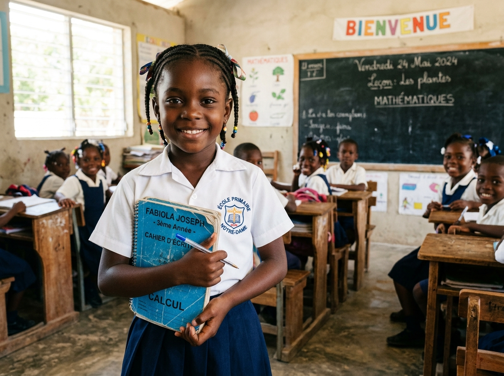

Avancées des projets
Suivi des étapes de préparation et de mise en œuvre des actions.

Projets, partenariats, rencontres et nouvelles du terrain : cette page rassemble les informations publiées par l’équipe PAAD.
Nous publierons ici les avancées importantes après validation des informations, des images et des autorisations nécessaires.
Aucune actualité officielle n’est disponible pour le moment.
Suivi des étapes de préparation et de mise en œuvre des actions.
Présentation des alliances confirmées et de leur contribution aux projets.
Informations sur les prochains rendez-vous et temps forts de l’organisation.
Contactez l’équipe pour être informé des futures publications.